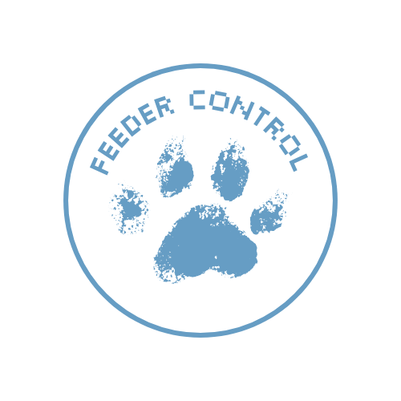

Entradas
Test de 16 Personalidades
Resultado: Personalidad ENFJ.
Fortalezas principales: Las personas con este tipo de personalidad se destacan por su alta empatía
y su capacidad para conectar emocionalmente con los demás, lo que las convierte en excelentes mediadoras y líderes.
Poseen una naturaleza inspiradora que les permite reconocer el potencial en otros y motivarlos a alcanzarlo.
Además, se caracterizan por su lealtad y devoción en las relaciones personales y profesionales, junto con un liderazgo
natural, entusiasmo y una fuerte orientación hacia el futuro y la visión. También cuentan con grandes habilidades comunicativas,
un fuerte compromiso con sus valores y causas sociales, y una notable capacidad de adaptación para mantener la armonía en distintos entornos.
Debilidades principales: A pesar de sus muchas virtudes, las personas con esta personalidad pueden llegar a ser demasiado idealistas
y exigentes consigo mismas, lo que a veces las lleva a frustrarse cuando la realidad no cumple con sus expectativas. Su fuerte deseo de ayudar
a los demás puede hacer que se sobrecarguen de responsabilidades. También presentan una tendencia a descuidar sus propias necesidades y bienestar
al priorizar a los demás, lo que puede llevarlas al agotamiento, así como la posibilidad de confiar demasiado en otros, volviéndolas vulnerables
a decepciones o aprovechamientos.
Test de Inteligencias Múltiples
Resultado: Inteligencias predominantes: Naturalista y Visual.
Fortalezas: Soy una persona creativa, con gran capacidad para observar lo que me rodea y para admirar la naturaleza.
Estas inteligencias me permiten tener una visión positiva del mundo, encontrar inspiración en mi entorno y expresarme a través de lo visual,
ya sea mediante la fotografía o la apreciación estética.
Debilidades: En algunas ocasiones puedo dejarme llevar demasiado por los estímulos visuales y perderme en mi propio mundo imaginativo.
Además, aunque destaco en lo naturalista y lo visual, es importante que siga trabajando otras inteligencias, por ejemplo fomentando la inteligencia
lingüística a través de la lectura y la escritura, para mantener un desarrollo más completo.
Test de Inteligencia Emocional
Resultado: Obtuve 27 puntos de un total de 45, lo que me ubica en un nivel medio de inteligencia emocional.
Fortalezas: Habitualmente soy capaz de identificar y controlar mis emociones, lo que me permite desenvolverme con equilibrio
en la mayoría de las situaciones. También suelo detectar las emociones de los demás con facilidad, lo que me ayuda a responder de manera adecuada
y a mantener buenas relaciones interpersonales. Mi empatía es un factor clave que me facilita relacionarme socialmente.
Debilidades: En situaciones de mucha carga emocional puedo llegar a sentirme sobrepasada. Además, en algunos casos
me resulta difícil identificar con claridad los sentimientos de ciertas personas, lo que provoca que sus reacciones emocionales me sorprendan.
También reconozco aspectos a mejorar como el manejo de algunos miedos que me limitan y el desarrollo de una mayor asertividad para expresar y defender mis derechos.
Reflexión: Considero que la inteligencia emocional es una habilidad fundamental para la vida personal y profesional, ya que permite
comprendernos a nosotros mismos y a los demás, favoreciendo relaciones más sanas y efectivas. Este resultado me motiva a seguir trabajando en el desarrollo
de mi comunicación, la gestión de mis emociones en contextos difíciles y el fortalecimiento de mi asertividad para crecer tanto en lo personal como en lo académico.
Test de Temperamento
Resultado: Mi personalidad predominante es Colérica.
Reflexión: Identificarme con el temperamento colérico me hizo reflexionar sobre mis principales características. Me reconozco como una persona
con liderazgo natural, orientada a la acción y a la toma de decisiones rápidas, algo que suele ser una fortaleza en contextos donde se necesitan resultados concretos.
También coincido con la idea de que me gusta asumir responsabilidades y mantener el control en distintas situaciones. Sin embargo, admito que en ocasiones me cuesta
tener paciencia, y que debo seguir trabajando en compartir responsabilidades en lugar de querer resolverlo todo por mí misma.
Opinión de Paula Martinez: "Coincido con la mayoría de las fortalezas, además de las características principales (extrovertida, hacedora, optimista),
las cuales la califican excelentemente. Lo que sí, no concuerdo con muchas de las debilidades."
Opinión de : (A completar)
Conclusión: Este ejercicio me permitió reconocer mis fortalezas y debilidades desde una perspectiva diferente, y también recibir retroalimentación de otras personas sobre cómo me perciben. Creo que el temperamento colérico me impulsa a ser activa, determinada y líder, pero también me desafía a trabajar en la empatía, la paciencia y la comunicación recíproca.
Cultura Organizacional: Havanna

Análisis: La cultura organizacional de Havanna se refleja de manera clara a través de diferentes mecanismos que refuerzan su identidad, valores y forma de actuar. Uno de los aspectos más evidentes es la fuerte conexión con su historia y con la filosofía de sus fundadores. Desde su origen en Mar del Plata en 1948, la empresa mantiene viva una narrativa centrada en la tradición argentina y en la calidad de sus productos, transmitiendo así una cultura basada en la confianza, el compromiso y la excelencia.
Historias y filosofía del fundador: Las historias sobre los orígenes de Havanna funcionan como un anclaje cultural. El relato de sus comienzos y el énfasis en la calidad artesanal de sus alfajores y dulces legitiman las prácticas actuales y refuerzan la identidad de la marca, que se asocia con tradición y autenticidad.
Símbolos materiales: La cultura también se expresa a través de sus productos, el diseño de los locales y el empaque característico en tonos dorados. Estos elementos representan elegancia, calidez y un sentido de pertenencia, transmitiendo tanto a empleados como a clientes la importancia de la calidad y la experiencia Havanna como un símbolo de orgullo nacional.
Rituales: El acto de “ir a tomar un café a Havanna” se ha transformado en un ritual cotidiano para muchas personas. Este hábito, repetido y valorado, refuerza la idea de comunidad, encuentro y disfrute, pilares fundamentales en la cultura de la empresa.
Características de la cultura (Estabilidad): Havanna prioriza la estabilidad cultural y la continuidad de sus valores fundacionales. Aunque ha crecido mediante franquicias y expansión internacional, su comunicación y su propuesta de valor siguen enfocadas en mantener la esencia original y la confianza del consumidor a través del tiempo.
Reflexión personal: Analizar la cultura de Havanna me permitió comprender cómo una organización puede sostener su identidad durante décadas sin perder su conexión emocional con las personas. Considero que este equilibrio entre tradición y crecimiento es un ejemplo valioso de cómo la cultura organizacional puede ser una ventaja competitiva cuando se la gestiona con coherencia y propósito.
Misión, Visión y Valores en Havanna
Misión: “Elaborar todos nuestros productos y servicios con altos estándares de calidad, manteniendo su origen artesanal. Queremos trasmitir la Experiencia Havanna a través de nuestro estilo de atención: calidez, servicio y pasión.”
Visión: “Queremos ser una compañía argentina con alcance global, reconocida por sus alfajores y chocolates, y excelencia en el servicio de atención de nuestros Locales.”
Valores: Si bien no están listados explícitamente en la web, se desprenden de su Misión y Visión valores como calidad, origen artesanal, calidez, servicio y pasión, los cuales se reflejan en cada producto y en la atención al cliente.
Análisis: Havanna es un excelente ejemplo de cómo una empresa puede mantener su esencia a lo largo del tiempo, proyectándose internacionalmente sin perder su identidad local. Su cultura organizacional —centrada en la tradición, la calidad y la cercanía— se refleja tanto en su comunicación como en su propuesta de valor.
Me parece fascinante cómo una marca tan asociada a la identidad argentina ha logrado reconocimiento global sin sacrificar su espíritu artesanal. Havanna no solo exporta un producto, sino una experiencia: el ritual del café, el encuentro, la calidez y el sabor de lo familiar.
Además, los distintos elementos de su cultura —las historias de sus orígenes, los símbolos como el empaque dorado o los locales característicos, y los rituales como “ir a tomar un café a Havanna”— actúan como pilares que sostienen su coherencia organizacional. Esto demuestra cómo una cultura sólida puede ser clave en la expansión internacional sin perder autenticidad.
Conclusión: Havanna representa un equilibrio admirable entre tradición y modernidad. Su cultura organizacional, sustentada en valores humanos y una identidad fuerte, convierte a la empresa en un referente de cómo la coherencia cultural puede transformarse en una ventaja competitiva sostenible.
Procesos de cambio
Decisión de cambiarme de club de handball
Motivación al cambio: El cambio fue motivado por un factor negativo externo a mi por parte de la directiva del club donde jugaba desde los 7 años. Esta mala gestión priorizaba los intereses de los "grandes cargos" por encima del bienestar humano y deportivo del equipo. Además, de tener una muy mala comunicación hacia las partes y sin dar la cara ante la situación.
En términos teóricos, la organización del club estaba generando una incompatibilidad organizacional con los valores del club. Los mismos, mostraban una falta de apoyo y compromiso hacia un proceso deportivo que estaba siendo exitoso. Esto fue lo que ocasiono que tomara mi decisión de irme del club, ya que no me sentía cómoda ni valorada en ese entorno.
Impacto: El proceso de cambio tuvo 2 caras. En un principio, lo percibí como algo negativo ya que la decisión me había dolido tomarla y afrontar lo que había ocurrido. Sin embargo, a largo plazo, el resultado ha sido claramente positivo. Creo que tomé la decisión correcta en su momento y lo reafirmo en mi dia a dia deportivo.
Este cambio impulso un crecimiento tanto personal como deportivo, conociendo nuevos ámbitos, personas y desafíos que se han ido presentando en el camino
Análisis teórico: Esta experiencia refleja claramente algunos conceptos del cambio organizacional. En primer lugar, se nota la resistencia personal al cambio, ya que dejar el club implicó romper con la costumbre, los vínculos y el miedo a lo desconocido.
Según el modelo de Kurt Lewin, atravesé tres etapas: el descongelamiento ocurrió cuando la mala gestión y el mal ambiente superaron mis ganas de quedarme; la implementación fue el paso de irme y adaptarme al nuevo entorno; y el recongelamiento llegó al sentirme cómoda y confirmar que la decisión había sido correcta.
Finalmente, con la analogía de la ola, el conflicto fue esa ola que elegí atravesar en lugar de resistir. Aunque dolió al principio, el cambio terminó siendo una oportunidad de crecimiento y aprendizaje personal.
Actitud frente al cambio
Resultado: La mayoría de mis respuestas se ubicaron entre 3 y 4 puntos, lo que indica que tengo una buena predisposición al cambio y no me asustan las transformaciones.
Características destacadas:
- Adaptabilidad: Suelo aceptar con rapidez las nuevas circunstancias y busco el lado positivo de los cambios. Considero que cada modificación en mi entorno puede traer oportunidades de crecimiento o aprendizaje.
- Actitud proactiva: En lugar de resistirme, intento anticiparme a los cambios y actuar con decisión. Me motiva la idea de mejorar y salir de la zona de confort, lo que me ayuda a mantener una mentalidad abierta y flexible.
Reflexión: Este resultado me representa, ya que suelo ver los cambios como parte natural de la vida. Aunque al principio puedan generar incertidumbre, creo que adaptarse con una actitud positiva permite evolucionar y descubrir nuevas fortalezas personales.
Liderazgo
Test de Estilos de Liderazgo de Blake y Mouton: El resultado obtenido fue Líder de equipo. Este estilo se caracteriza por combinar una alta orientación tanto a las personas como a las tareas. Me identifico con esta descripción, ya que busco lograr buenos resultados sin perder de vista el bienestar del grupo. Considero que el trabajo en equipo, la comunicación y la motivación son claves para alcanzar los objetivos comunes.
Test de Liderazgo Situacional: Mi resultado fue Conducta: Dirigir y Escala de efectividad: Muy efectivo. Esto refleja que, ante ciertas situaciones, suelo tomar la iniciativa, brindar orientación clara y asumir el rol de guía del grupo. Creo que esta forma de liderazgo me permite mantener el orden y la dirección cuando se requiere tomar decisiones rápidas o coordinar acciones concretas.
Reflexión: Ambos resultados muestran un equilibrio entre la orientación a las personas y la necesidad de organización. Me siento cómoda liderando desde la cercanía y la claridad, buscando que todos comprendan los objetivos y se sientan parte del proceso. Sin embargo, también reconozco la importancia de seguir desarrollando mi flexibilidad para adaptar mi estilo según cada contexto y equipo.
Resultado Crucigrama:

Capacidad de Negociación
Resultados: Predominan los estilos Colaborador, Amistoso y Constructivo: busco acuerdos ganar-ganar y buena relación.
Análisis: Me identifico con estos estilos; disfruto cooperar y crear buen clima.
Para mejorar:Ser más firme, equilibrar amabilidad, decidir con seguridad y usar más criterios objetivos.
Refelxión:Es un estilo positivo, pero fortalecer firmeza y claridad me hará negociar mejor
Planes de negocio
Video elegido Elegí este video: https://www.youtube.com/watch?v=-KhVuakkl3g ya que me pareció muy fácil de entender. Explica conceptos importantes en poco tiempo y sin perder la atención
Propuesta de video: https://www.youtube.com/watch?v=ZH09LmB6l_U Me parece interesante ya que Mark Zuckerberg es alguien muy importante en el campo de la tecnología y de cómo desarrolló sus ideas
Propuesta plan de negocio
Tema FEEDER CONTROL
Trabajo realizado junto con Aida Laricchia

Gracias por leer mi blog. Saludos!